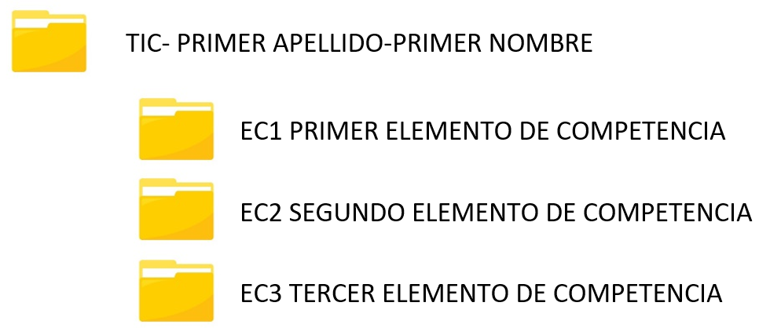
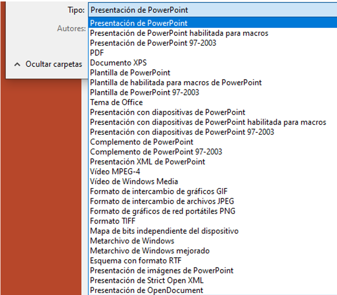

Gestión de Archivos en Drive
..
1. Realizar en forma individual, una estructura de 4 carpetas utilizando el almacenamiento en la nube de tu elección (Google Drive, OneDrive, Dropbox, Cloud Drive, etc.).
Esta estructura tendrá una carpeta principal con el nombre de la asignatura (TIC) y tus datos (primer apellido y tu primer nombre); de la cual dependerán las otras 3 carpetas que corresponderán a los elementos de competencias. Esta estructura en la Nube será al final de la asignatura su Portafolio de Evidencias del Curso.
Observen cómo deben quedar los nombres de las carpetas:

2. Por otra parte, deben generar un PowerPoint en relación a dos herramientas tecnológicas como Canva, Visme, Creately, Picktochart, easelly, etc., cualquiera que sea de tu interés. Busca información en Internet sobre ellas para desarrollar una presentación de al menos 5 diapositivas, con características a tu gusto (diseño, formato de letra, color, etc. a tu consideración). Deben incluir una portada con nombre, grupo, logo institucional y fecha.
La presentación en PowerPoint que generen, deberán guardarla con el nombre EC1-ACT5-APELLIDOS en cada uno de los siguientes formatos:
- Presentación de PowerPoint.
- PDF.
- Presentación con diapositivas de PowerPoint habilitada para Macros.
- Vídeo de Windows Media.
Para guardar la presentación en esos 4 formatos, utiliza la opción TIPO en GUARDAR COMO, tal como se visualiza en la imagen de la derecha. De esta manera, generarán realmente 4 archivos con la misma información, pero con formato de presentación diferente.

3. Cuando tengan los 4 archivos generados desde PowerPoint, comprímanlos en un solo archivo (ZIP o RAR) por medio de WinRar. Para poder comprimir los cuatro archivos deben tener instalada la aplicación en su equipo. Una vez instalado el software, seleccionen directamente los 4 archivos que les interesan (no es necesario establecerlos en una carpeta para comprimirlos), dar un clic con el botón derecho del mouse y seleccionar la opción Añadir al archivo e indicarle que contenga el nombre EC1-ACT5-APELLIDOS y la contraseña de protección: TIC2022-2. En el siguiente vídeo se explica detalladamente como comprimir archivos utilizando WinRar.
4. Subir a la carpeta EC1 PRIMER ELEMENTO DE COMPETENCIA que has desarrollado en el punto 1 de esta práctica, los siguientes archivos: el archivo comprimido EC1-ACT5-APELLIDOS.rar o ECI-ACT5-APELLIDOS.zip, así como las dos evidencias de la Infografía (en formato PDF e Imagen) de la actividad 2. Por lo que, deberán tener 3 archivos guardados en esa carpeta del Drive.
5. Establecer compartir a la carpeta principal TIC-PRIMER APELLIDO-PRIMER NOMBRE otorgando atributos solamente del tipo LECTURA o LECTOR, para cualquier persona a quien se le envíe el vínculo.
6. Enviar por medio de la Plataforma Educativa Virtual Institucional, el enlace compartido a la carpeta principal en la nube. Para asegurarte que la evidencia contiene todo lo solicitado, verifica la Rúbrica de Evaluación y el Ejemplo. Si desean comprobar que han compartido adecuadamente la carpeta, cierren la sesión del almacenamiento en la nube y establezcan el enlace en cualquier navegador, el cual deberá abrir la carpeta principal.
NOTA: Si envías el enlace a uno de tus compañeros, recuerda que le estarás dando acceso a tu Portafolio del Curso, por lo tanto, tendrán a su alcance todas tus evidencias y las podrá bajar. Dos evidencias iguales se anulan, independientemente quien haya sido el autor principal.